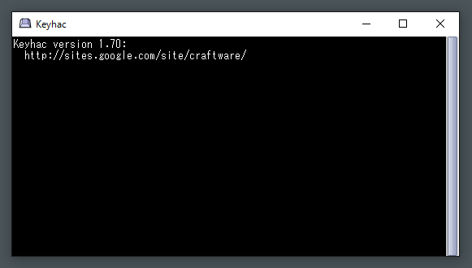
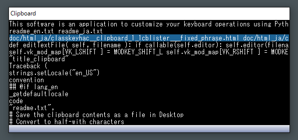

|
keyhac
|


|
|
keyhac
|
|
| Author: | craftware |
|---|---|
| Contact: | craftware@gmail.com |
| Software type: | Free software |
| Supported OS: | Windows Vista/7/8/10 32bit/64bit |
| Dev env: | Python + VisualC++2015 |
| Website: | http://sites.google.com/site/craftware/ |
Contents
This software is an application to customize your keyboard operations using Python script language.
Using this software, you can customize the behavior of various applications flexibly.
Features
- Customize the keyboard input.
- Describe the configuration file in Python script language.
- Can replace key input with different key input.
- Can execute any actions described in Python, on key input.
- Can define different keymaps for each application.
- Resident in tasktray.
- Can move windows by keyboard.
- Can activate windows by keyboard.
- Can operate mouse pointer by keyboard.
- Can launch applications.
- Can define modifier keys additionally.
- Can define "One shot modifier"
- Has clipboard history feature.
- Can record and replay keyboard macros,
Once you launched Keyhac, you will see an icon in tasktray.

By left-clicking the tasktray icon, you can open the console window of Keyhac. In this window, you can see the log output of Python interpreter which is embeded in Keyhac.
By right-clicking the tasktray icon, you will see the pop-up menu.
Item name Feature Reload config file Reload the config.py file. Edit config file Edit the config.py file. Enable/Disable the Internal log output Enable or disable the detailed log output. Enable/Disable the Hook Enable or disable the key hook tentatively. Start/Stop recording key input Start or stop the keyboard macro recording. Clear console Clear the log of console window. Help Open the help document. Exit Terminate the Keyhac. Pressing Ctrl-Shift-Z, you can open the clipboard history list. This key assign can be configured by config.py.
In the clipboard history list, you can use following key assigns,
Key Feature Up/Down Change the selection. Enter Paste the text of current selection. Ctrl+Enter Paste the text of current selection with quote mark. Shift+Enter Store the text of current selection in clipboard. Esc Close the list window. F Start the incremental search. Delete Delete the list item. Left/Right Switch between clipboard/fixed phrases/date-time.
During the incremental seach in clipboard history list, you can use wild-card such as "*" and "?".
Key assign during the incremental search
Key Feature Up/Down Move to next/previous item which meets the search condition. Return End incremental search Esc End incremental search Migemo
Migemo is a library for incremental search Japanese characters using Roman-ji.
For the detailed input method of Migemo, please refer the official website of Migemo ( http://www.kaoriya.net/software/cmigemo/ ).
If you want to use Migemo, you need to obtain the dictionary files, and put them as follows.
- (Keyhac installed directory)/dict/migemo-dict
- (Keyhac installed directory)/dict/han2zen.dat
- (Keyhac installed directory)/dict/zen2han.dat
- (Keyhac installed directory)/dict/hira2kata.dat
- (Keyhac installed directory)/dict/roma2hira.dat
The dictionary files are included in the binary package of C/Migemo,
http://cmigemo.googlecode.com/files/cmigemo-default-win64-20110227.zip
Extracting the distributed file, following files and directories will be created.
Name Comment keyhac.exe Application program main body python35.dll Python runtime library library.zip Python library archive _config.py Default configuration file readme_en.txt Document to read firstly (English) readme_ja.txt Document to read firstly (Japanese) lib/ Directory which contains runtime library for execution extension/ Directory to put user defined scripts theme/ Directory which contains theme files dict/ Directory to put Migemo dictionary files doc/en/index.html Directory which contains document (English) doc/ja/index.html Directory which contains document (Japanese) license/ Directory which contains copy right information And with the initial launch, following files will be created automatically in the application data directory. (On Vista/7/8/10, c:/Users/(name)/AppData/Roaming/Keyhac, on XP, c:/Documents and Settings/Application Data/Keyhac )
Name Comment config.py Configuration file keyhac.ini State saving file If you put config.py and keyhac.ini in the same directory with keyhac.exe, those files will be used preferentially. This is useful feature if you want to carry USB memory with Keyhac installed.
To uninstall Keyhac, please remove the directory you installed.
And please remove the application data directory. (On Vista/7/8/10, c:/Users/(name)/AppData/Roaming/Keyhac, on XP, c:/Documents and Settings/Application Data/Keyhac )
This software doesn't use Windows's registory.
In this software, following libraries are used.
- Python Programming Language
- http://www.python.org/
- Pillow
- https://github.com/python-imaging/Pillow
- C/Migemo
- http://www.kaoriya.net/
Keyhac uses Python as a embeded scripting language, so you can describe all the key customization in Python script.
With the initial execution of Keyhac, the configuration script name config.py will be created in the application data directory. (On Vista/7/8/10, c:/Users/(name)/AppData/Roaming/Keyhac, on XP, c:/Documents and Settings/Application Data/Keyhac ) You can customize Keyhac by editting this file by text editor.
You can choose any text editor to edit this config.py, but it is recommended to use a text editor which can display Python source code with syntax highlighting.
Overall structure of config.py
In config.py, a function named configure() is defined as below. Keymap object is passed as an argument of configure(). And you can define the key customization by manipulating the Keymap object.
Definition of configure function
def configure(keymap):Simple replacement of keys
By calling keymap.replaceKey() method in configure(), you can replace the meaning of keys.
Example of replaceKey()
# Simple key replacement keymap.replaceKey( "LWin", 235 ) keymap.replaceKey( "RWin", "Space" )This example is re-assigning Left-Windows key to virtual keycode 235, Right-Windows key to Space key.
You can pass both key-name(string) and virtual-keycode(integer) as arguments of replaceKey().
The key replacements by replaceKey() affect to following other key customizations.
Adding modifier key
By calling keymap.defineModifier() method in configure(), you can define modifier keys additionally.
Modifier key is a key like Shift, Ctrl, which let key inputs have different meaning by pressing at the same time.
Example of defineModifier()
# Defining modifier key keymap.defineModifier( 235, "User0" )This example is defining virtual keycode 235 (which is replaced from Left-Windows key in previous example) as User-modifier-0.
By default, there are four modifier keys of Alt, Ctrl, Shift, Win, and you can define up to 4 user modifier keys ( User0 - User3 ) additionally.
Defining global keymap
Keyhac allows you to define separated keymaps by window types, however this document explains firstly how to define the global keymap which affects all the windows.
You can call keymap.defineWindowKeymap() method without arguments to define the global keymap.
Example of defineWindowKeymap()
keymap_global = keymap.defineWindowKeymap()keymap.defineWindowKeymap() returns WindowKeymap object. You can assign actions for key inputs by using WindowKeymap object in Python dictionary manner.
How to assign actions
# USER0-Up/Down/Left/Right : Move window by 10pixel unit keymap_global[ "U0-Left" ] = keymap.MoveWindowCommand( -10, 0 ) keymap_global[ "U0-Right" ] = keymap.MoveWindowCommand( +10, 0 ) keymap_global[ "U0-Up" ] = keymap.MoveWindowCommand( 0, -10 ) keymap_global[ "U0-Down" ] = keymap.MoveWindowCommand( 0, +10 )This example is assigning the movement of active window to the combination of User-modifier-0 and directional keys.
Defining keymap for specific window type
By calling defineWindowKeymap() with arguments, you can define a keymap for specific window type.
Example of defineWindowKeymap()
keymap_notepad = keymap.defineWindowKeymap( exe_name="notepad.exe", class_name="Edit" )This example is defining a keymap for the window which has program name "notepad.exe" and window class name "Edit".
You can know the window class name and program name, by enabling the internal log output from tasktray icon menu, and inputting key on target window. You will see log output like following.
Window : exe : cfiler.exe : class : CfilerWindowClass : text : Craft CommanderIn the argument of defineWindowKeymap(), you can use wild card ("*" "?") to have wider condition.
Various actions
Callable object
You can assign any callable objects like this.
def command_HelloWorld(): print "Hello World!" keymap_notepad[ "C-A" ] = command_HelloWorld keymap_notepad[ "C-F" ] = keymap.InputTextCommand( "qwerty" ) keymap_notepad[ "C-G" ] = keymap.InputTextCommand( "Test" )Alternative key input
By passing a string which represents key input, you can let a key input has a same effect with different key input.
keymap_notepad[ "C-C" ] = "Return" keymap_notepad[ "C-D" ] = "C-F"Alternative multiple key inputs
By passing multiple key expression strings, you can emit multiple consecutive key input events virtually.
keymap_notepad[ "C-E" ] = "A-V", "A-S"Setting of text editor
You can set the path of your favorite text editor to keymap.editor.
Example of setting text editor
keymap.editor = "notepad.exe"You can set callable object also as below.
Example of setting text editor with callable object
def editor(path): shellExecute( None, None, "notepad.exe", '"%s"'% path, "" ) keymap.editor = editorThis text editor setting affects the behavior of when "Edit config file" of tasktray icon menu is selected. config.py file is opened by the specified text editor.
Display setting
You can customize the font and color of clipboard history list window and console window.
Example of font setting
keymap.setFont( "MS Gothic", 12 )Font name and font size can be passed as arguments of keymap.setFont().
Example of theme setting
keymap.setTheme("black")Theme name can be passed to keymap.setTheme(). Themes are defined as directories in "theme" directory.
Setting of quote mark
Example of quote mark setting
keymap.quote_mark = "> "To keymap.quote_mark, you set the mark for quote-pasting from clipboard.
Key expressions
In config.py, you express the key input condition, key event generated virtually, by string expression.
If required, the key expression string can be a combination of modifier keys and main key separated by hyphen, as following examples.
"C-S-Return""Ctrl-Shift-Return"Available modifier expression is as below.
Modifier Expression Alt key (both left/right) Alt-, A- Left Alt key LAlt-, LA- Right Alt key RAlt-, RA- Control key (both left/right) Ctrl-, C- Left Control key LCtrl-, LC- Right Control key RCtrl-, RC- Shift key (both left/right) Shift-, S- Left Shift key LShift-, LS- Right Shift key RShift-, RS- Windows key (both left/right) Win-, W- Left Windows key LWin-, LW- Right Windows key RWin-, RW- User modifier key (both left/right) User0-, User1-, User2-, User3-, U0-, U1-, U2-, U3- Left User modifier key LUser0-, LUser1-, LUser2-, LUser3-, LU0-, LU1-, LU2-, LU3- Right User modifier key RUser0-, RUser1-, RUser2-, RUser3-, RU0-, RU1-, RU2-, RU3- Other than modifiers, you can describe extra conditions as below.
"D-S-Return" "U-S-Return" "O-LShift"
Condition Expression Key down D- Key up U- One-shot modifier O- Following is the expression of main key.
Expression Meaning A - Z 0 - 9 Minus Plus Comma Period Semicolon Colon Slash BackQuote Tilde OpenBracket BackSlash Yen CloseBracket Quote DoubleQuote Underscore Asterisk Atmark Caret NumLock Divide Multiply Subtract Add Decimal Num0 - Num9 F1 - F12 Left, Right, Up, Down Space Tab Back Enter/Return Escape/Esc CapsLock/Caps/Capital Apps Application key Insert Delete Home End PageUp PageDown Alt LAlt RAlt Ctrl LCtrl RCtrl Shift LShift RShift LWin RWin PrintScreen ScrollLock Pause LButton/RButton/MButton Mouse Left/Right/Middle buttons Specific virtual key code One-shot modifier
One-shot modifier is a system to execute action when other keys are not manipulated between when the modifier key is pressed and when the modifier key is released.
Example of one-shot modifier setting
keymap_global[ "O-LCtrl" ] = command_TestLike this example, using the "O-" qualifier, you define one-shot modifier. by this example, pressing and releasing left Ctrl key solely, the function command_Test is invoked.
Assining action to multi-stroke key inputs
Example of multi-stroke key setting
keymap_global[ "C-X" ] = keymap.defineMultiStrokeKeymap( "C-X" ) keymap_global[ "C-X" ][ "C-F" ] = "C-O"This example is defining a multi-stroke key input Ctrl-X, Ctrl-F, and assigning C-O.
Like this, by generating the keymap by defineMultiStrokeKeymap() method, and assigning it to the key in other keymap, you can customize the muti-stroke key input.
The string argument passed to defineMultiStrokeKeymap() is a help message to be displayed at the caret position.
Keyboard macro
Keyhac has a feature to record the sequence of key inputs, and replay it repeatedly. This is called Keyboard Macro feature.
Recording of the keyboard macro can be started/stopped either tasktray icon menu - "Start/Stop recording key input" or key assigned command.
Example of Keyboard macro start/stop/replay setting
keymap_global[ "U0-0" ] = keymap.command_RecordToggle keymap_global[ "U0-1" ] = keymap.command_RecordStart keymap_global[ "U0-2" ] = keymap.command_RecordStop keymap_global[ "U0-3" ] = keymap.command_RecordPlay keymap_global[ "U0-4" ] = keymap.command_RecordClearKeyboard macro doesn't differenciate the window type, and replay the same key input sequence on any window types. So you need to be careful about that the meaning of the key input can mean differently on other window types.
Setting of clipboard history list
Keyhac's clipboard history feature can be extended by customizing config.py. You can add fixed-phrase items and date-time items, in addition to clipboard history list.
Example of clipboard history list setting
import datetime # Fixed phrases fixed_items = [ ( "name@server.net", "name@server.net" ), ( "Address", "San Francisco, CA 94128" ), ( "Phone number", "03-4567-8901" ), ( "Edit config.py", keymap.command_EditConfig ), ( "Reload config.py", keymap.command_ReloadConfig ), ] # Return a formatted date-time string def dateAndTime(fmt): def _dateAndTime(): return datetime.datetime.now().strftime(fmt) return _dateAndTime # Date-time date_and_time_items = [ ( "YYYY/MM/DD HH:MM:SS", dateAndTime("%Y/%m/%d %H:%M:%S") ), ( "YYYY/MM/DD", dateAndTime("%Y/%m/%d") ), ( "HH:MM:SS", dateAndTime("%H:%M:%S") ), ( "YYYYMMDD_HHMMSS", dateAndTime("%Y%m%d_%H%M%S") ), ( "YYYYMMDD", dateAndTime("%Y%m%d") ), ( "HHMMSS", dateAndTime("%H%M%S") ), ] keymap.cblisters += [ ( "Fixed phrases", cblister_FixedPhrase(fixed_items) ), ( "Date-time", cblister_FixedPhrase(date_and_time_items) ), ]By adding the item listing up object to keymap.cblisters, you can add the features in addition to clipboard history. Using Left/Right keys, you can switch to the features from clipboard history.
Each item has either ( label string, pasting string ) or ( label string, callable object ) format. When you specified a callable object in the second position of the tuple, Keyhac pastes the string which is returned from the callable object.
If the callable object returns None instead of pasting string, Keyhac doesn't paste any string. Doing like this, you can add the command execution feature in the clipboard history list.
Setting of clipboard history maximum number/maximum total size
You describe as below to specify the maximum number of clipboard history.
Example of clipboard history maximum number setting
keymap.clipboard_history.maxnum = 10000By default, up to 1000 histories are stored.
And you describe as below to specify the maximum total size of clipboard history.
Example of clipboard history maximum total size setting
keymap.clipboard_history.quota = 10 * 1024 * 1024By default, up to total 10MB histories are stored.